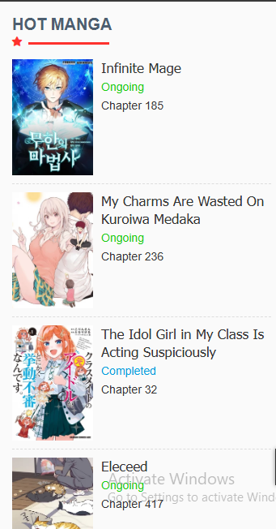

Genres
✡______
4 koma (249) Medical (42)
Action (6427) Music (77)
Adult (1236) Mystery (2171)
Adventure (3691) One shot (2960)
Artbook (33) Overpowered MC (270)
Award winning (332) Psychological (1951)
Comedy (12476) Reincarnation (795)
Cooking (199) Romance (13827)
Doujinshi (213) School Life (8356)
Drama (10732) Sci-fi (2096)
Ecchi (2734) Seinen (5589)
Erotica (1768) Sexual violence (424)
Fantasy (6302) Shota (128)
Gender Bender (976) Shoujo (5944)
Gore (563) Shoujo Ai (905)
Harem (1553) Shounen (6219)
Historical (1698) Shounen Ai (1015)
Horror (1406) Slice of Life (6256)
Isekai (1065) Sports (793)
Josei (1495) Super power (27)
Loli (279) Supernatural (5336)
Manhua (597) Survival (319)
Manhwa (1229) Time Travel (328)
Martial Arts (850) Tragedy (1561)
Mecha (359) Webtoon (2155)
